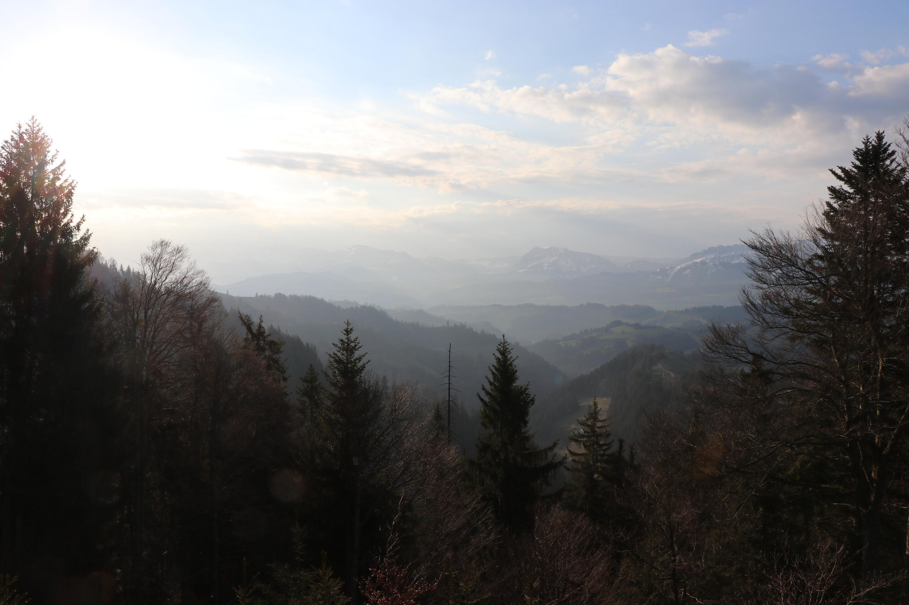
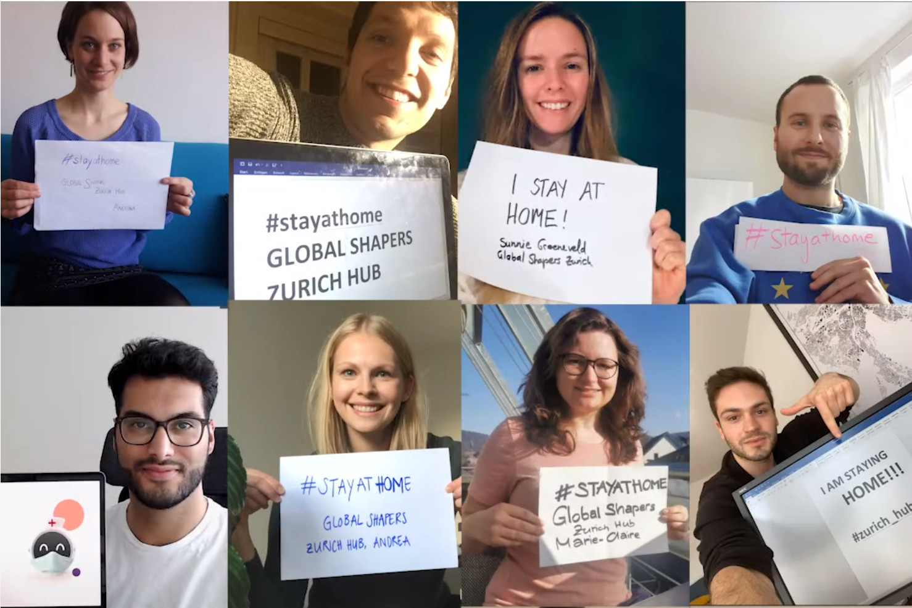
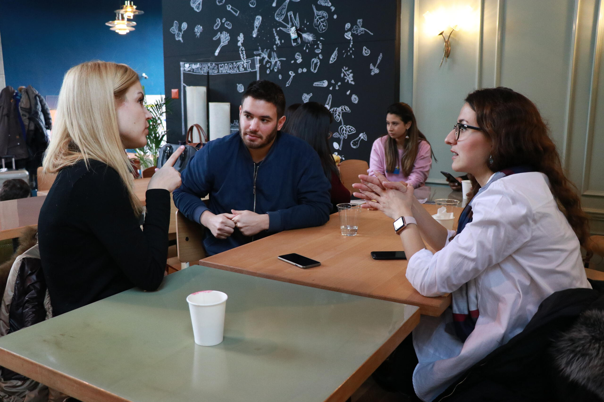
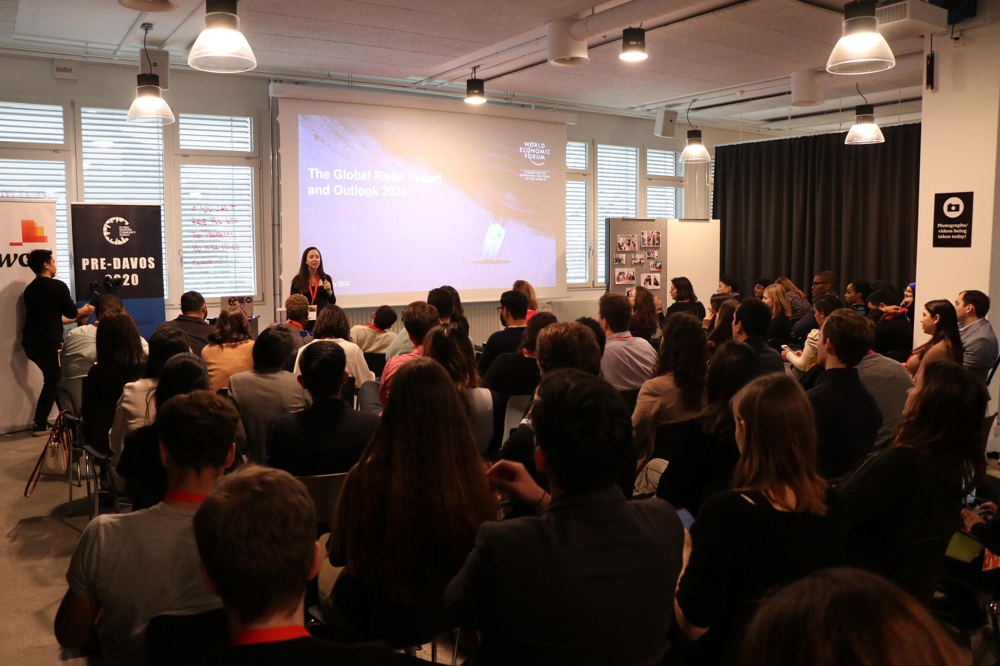

Global Shapers Zurich is the Zurich Hub of the Global Shapers Community,
a global network of young people who are exceptional in their potential, their achievements and their drive to make a contribution to their communities.
Initiated by the World Economic Forum (WEF),
the Global Shapers Community seeks to unite purpose-driven people between 20 and 30 years old
who want to develop their leadership potential towards serving society.
To that end, the hubs undertake local or national projects to improve their communities and the world.
Members are selected based on their time commitment, altruistic motivation, diversity and professional excellence. We are committed to equal recruitment opportunities regardless of race, colour, ancestry, religion, sex, national origin, sexual orientation, citizenship, marital status, disability or gender identity.
Interested in getting involved? To begin the application process, please complete our application form. Our recruitment cycles occur twice a year, with deadlines at the end of January and September respectively. The next recruitment day is end of February 2025 (date to be confirmed). However, you're welcome to submit your application at any time and we will get back to you via email as we approach the end of the current recruitment cycle.
If we think you might be a good match for our Hub, we will invite you to a casual meetup so that we can get to know each other. Successful candidates will then start a six-month exploration phase, to meet the Hub and engage with its members. Should you have any questions regarding accessibility, the time commitment or if you just want to learn more about the Hub, please contact Lukas for more information.
The Reshape
Scaling reforestation efforts

In order to scale reforestation efforts,
youth leaders in nature conservation and reforestation around the world
need access to a strong support network, transparency tools, and emerging technologies
so that they can receive financial, social and political support to reverse the deterioration of nature. The Zurich Hub is developing a technology platform that connects youth leaders
and provides them with access to emerging technologies, ecological advice,
and exposure that supports their field work.
The key features of the project are:
Emerging technologies:
The Reshape is a web platform that provides stakeholders in conservation
with data-driven maps of their project sites that leverages past satellite data
and artificial intelligence to measure the health and ecological value of their restoration sites.
Ecological advice:
The Reshape connects youth leaders with scientific experts in ecology and computer science
through our WhatsApp group that are available for advice and questions.
Exposure and fundraising:
The Reshape features youth leaders in nature conservation and restoration
through our Instagram account, podcasts on Spotify, and fundraising initiatives.
During last year's 2023 Züri schenkt edition we were able to deliver ~1600 gifts to asylum seekers in Zurich, thereof almost half were children or teenagers. This was all possible through a well organized distribution day (and hub event) and a good media coverage. Additionally, we were able to create new partnerships with companies and other organizations in Zurich (e.g. the Refomierte Kirche) and expand our network and supporters.
More than 15 million people worldwide suffer from paralysis. The Run in the Dark is a global charity running event to raise money to support research and solutions to cure paralysis in our lifetime. The Zurich Hub has contributed to this initiative by organizing a local running event (5K or 10K) in Zurich in 2022 and 2023. Our third edition will take place on November 13, 2024.
Health Club
Cultivating Healthy Habits for a Better Life.
With the Health Club, our mission is to provide a secure and inclusive environment where individuals can discover the benefits of healthy habits, such as exercise, meditation, reading, and more. By empowering young people with these tools, we hope to foster a sense of well-being and control in daily lives.
FirstGen Lab
Empowering First-Generation Students.
FirstGen Lab is designed for first-generation students, whose parents did not receive higher education. Recognizing the resilience fostered by humble beginnings, we support students with less privileged support systems, migrant backgrounds, or from rural areas, in breaking into high-opportunity industries. These ambitions are supported by an annual program week, mentorship programs and knowledge circles.
Covid-19 response

We have addressed the challenges caused by Covid-19 with a fast, multi-stakeholder response.
Our priorities have been to curb the epidemic and facilitate inter-generational dialogue.
To complement the official messages, we have contacted German and French-speaking comedians early March to suggest them to use humour
to promote physical distancing and hygiene. Comedians with a total followership of 1.2 million have responded by publishing videos to promote
physical distancing and hygiene.
#stayathome. In the footsteps of Italian Shapers, we have published #stayathome messages and videos on social media.
We have proposed to Swisscom to analyse anonymized mobile data
for guiding policy decisions. Swisscom responded swiftly and positively, and was able to support the Federal Council
in order to lower the infection rate while minimizing the consequences for businesses and social life.
Heroes against Loneliness aims at connecting isolated people across generations by
randomly connecting registered participants over phone calls. Global Shapers Zurich is a supporting partner of the project
initiated by Generali and Lunch Lottery.
Diversity & Inclusion
Raising awareness in Zurich.
Sustainability Blog
Our hub's blob on sustainability topics.
We portray people who commit a large part of their professional and/or private life to working towards more sustainability and combatting climate change. You can find our posts here.
Career jumpstart
Interview training with Pro Juventute.

Starting your first job is a big step in every young person's life.
With many students coming from less advantaged families or having language barriers,
this step comes with a lot of uncertainties and new challenges.
Together with Pro Juventute,
the Global Shapers Zurich help students between the 8th and 10th grade with simulated job interviews
and individual feedback for their application documents.
Thus, we can pass on the experiences and knowledge that we gained from going through the process ourselves
and help young people to start their professional careers with excitement and joyful anticipation.
Do you want to get involved as well?
Whether you are a Shaper or not,
we are always on the lookout for young professionals with a good command
of German or French to help out with the mock interviews.
If you want to get active,
please sign up using our volunteer form
and we will be in contact.
Here is a short explainer video in German:
Topic videos
From the Summit Pre-Davos 2020.

After the Pre-Davos 2020, we produced together with Francis Rafal from the Vienna hub the following videos on some of the issues that were discussed during the summit:
Our member and dear friend Nicolas "Artista" Nägeli tragically lost his life in March 2016
while on a snowboarding-tour in the Swiss Alps.
Before this accident, Artista was the co-director of
Aiducation International Switzerland.
In his memory the Hub started the campaign #Run4Artista to raise funds for two scholarships for Aiducation (6'400 CHF).
After three weeks we adjusted the goal to three scholarships (9'600 CHF)
thanks to the early momentum of the fundraising campaign.
On Sunday, 9 April 2017, six of us ran three marathons for three stipends
(Sunnie and Christian the full marathon and Aurelian, Kaspar, Alexander and Frederike the Team Run).
We raised 10'043 CHF in the online fundraising campaign and
fabulousfriends.org was so kind to add another two stipends worth 6'400 CHF.
Together the Zurich Hub raised 16'443 CHF in memory of Artista!
The money will provide five talented and underprivileged students with an Aiducation scholarship.
Thank you all for contributing to the great success of this project
and a big thank you to Sunnie for pushing the campaign forward with so much energy!
See this article
in German by Moneycab for more information.
Facts about migration
Information campaign on YouTube.
Migration is one of the most discussed and emotionally strained topics in Switzerland.
Conversations are often not based on informed data and this impedes the evaluation of needs and impact of policies and creates prejudices.
Facts About Migration aims to create transparency around actual net migration in Switzerland.
The Zurich Hub created an animation clip, which was published on YouTube, to illustrate the most important numbers in a way that is easy to understand.
Pre-Davos Summit
The spirit of Davos in Zurich.
Ahead of the World Economic Forum Annual Meeting in Davos,
the next generation of global leaders is coming together in Zurich.
The Pre-Davos Summit connects 90 Global Shapers from more than 40 countries
to find solutions to the world's most pressing problems.
The 50 Shapers selected by the World Economic Forum to participate in the Annual Meeting
leverage the Pre-Davos to discuss global affairs with 40 peers from Switzerland
and refine their plans for improving the state of the world in Davos.


{kind=link}
{kind=link}
{kind=link}
{kind=link}
{kind=link}
{kind=link}